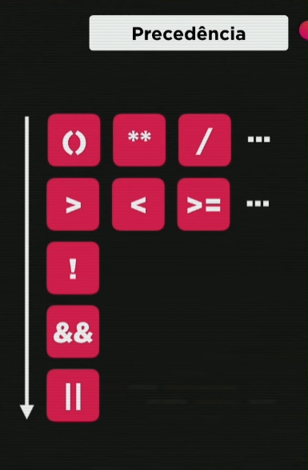
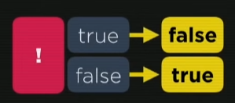
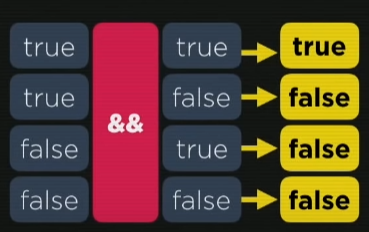
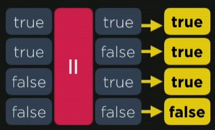

Utilizando {+, -, *, /, %, & **}
A ordem de precedência -> () -> ** -> *, /, % --> + -

Após a aula 02, identificado a ordem de precedencia correta após calcular os aritméticos
- Atribuição Simples:
- Auto-atribuições:
- Incremento: n = 10

Note que cada vez que você atribuir uma variavel, você pode utilizar ele para fazer o cálculo subsequente!

Já na auto-atribuição, ele vai substituindo o valor anterior e então fazendo um novo valor atribuido àquele valor! Porém, há uma forma de shorthand para realizar este cálculo, DESDE QUE ELE SEJA CALCULADO PELA MESMA VARIÁVEL, por ex n = n + 4 --> n+=4

n = n + 1 > n = 11
n = n - 2 > n = 9
n++ = 11 (valor base + 1 )
Aula 02 - ex006
- Operadores básicos:
"> (maior)" "< (menor)" ">= (maior ou igual)" "<= (menor ou igual)" "==(valor de igualdade no js)" "!=(diferente)"Para cada expressão que tenha operador relacional ligada a ela, o resultado a ela vai ser sempre uma expressão booleano! (Verdadeiro ou falso /true or false)
5 > 2 -> true
Exemplos:
7 < 4 -> false
8 >= 8 -> true
9 <= 7 -> false
5 == 5 -> true
4 != 4 -> false
preço >= 200.50 // o preço é maior ou igual a 200.50 ?
idade < 18 // A pessoa é menor de 18?
curso == 'JavaScript' // Curso é Javascript?
n1 != n2 // Numero 1 é diferente do número 02?
- Para operador de IDENTIDADE:
5 == 5 -> true
5 == '5' -> true
Note agora o operador de igualdade restrita, no qual há 3 sinais de igual (=)
ex: 5 === '5' -> false
Por conta de ser um 5 numéric e um 5 string, nao há igualdade!
Exemplo:
5 == '5' -> TRUE
var x = 5
var y = '5'
typeof x -> 'number'
typeof y -> 'string'
x == y -> TRUE
x === y -> FALSE
x != y -> FALSE
x !== (desigual restrito) y -> TRUE
- ! -> NEGAÇÃO
Tratado como operador UNÁRIO

Só tem um operando, após a exclamação só vai ter TRUE or FALSE.
Uma coisa que nao é verdadeira, é falsa
Uma coisa que nao é falsa, é verdadeira
- && -> CONJUNÇÃO
Assim como o operador de disjunção, este é um operador binário, na qual possuimos dois valores lógicos, um de cada lado.

Basta para que um deles seja false, para que o resultado seja false
Exemplo de que eu quero uma caneta azul e uma vermelha.
Se eu conseguir as duas, true
Se eu conseguir uma azul mas não a vermelha, false
Se eu só conseguir a vermelha mas não a azul, false
Se eu não conseguir nenhuma, false
- || (barra do lado do Z) -> DISJUNÇÃO

Praticamente o contrário do de Conjunção!
Basta para que um deles seja verdadeiro, para que o resultado seja verdadeiro
Exemplo:
var a = 5
var b = 8
true && false -> FALSE
true && true -> TRUE
false || false -> FALSE
true || false -> TRUE
true || true -> TRUE
a > b && b % 2 == 0 // FOCA NISSO, quando temos opradores aritméticos, relacionais e lógicos na mesma operação. Iremos fazer primeiro os ARITMÉTICOS, depois os RELACIONAIS e então os LÓGICOS
a > b && b % 2 == 0 -> FALSE
a > b || b / 2 == 2 -> TRUE
// Outros exemplos //
Idade >= 15 && idade <= 17 // a idade está entre 15 e 17?
estado == 'RJ' || estado == 'SP' // O estado é RJ ou SP?
salário = 1500 && sexo != 'M' // salário é acima de 1500 e não é homem ? (M de masculino, ao lado)
- ?
- :
var média = 5.5
média => 7.0?"Aprovado":"Reprovado"
var x = 8
var res = x % 2 == 0 ? 5 : 9
res -> 5
[[referencia do código SE do excel =) ]]